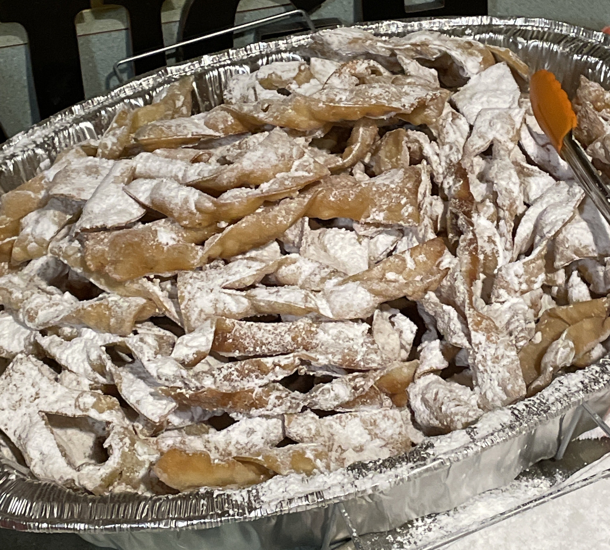

Enjoying Family Time
10-13-2024 Michael Gryn
I really enjoy spending time with my family, especially over the holidays when everything is so festive. The house is decorated with a Christmas tree and other fixtures with a whole slew of lights on the bushes and trees outside. My sister comes up from Ohio with her boyfriend and we all talk about our lives with one another. We invite some close cousins and family friends to enjoy a large dinner and catch up with one another. My favorite dish to eat is definitely a tie between mashed potatoes and brown sugar smoked ham on Christmas. There's always a bit of leftovers so I can eat pretty good for the next couple days while relaxing before I have to eventually go back to college and have to cook my eggs and toast or whatever I can make in time before leaving to walk thirty minutes to class in twenty degree weather with a coat, hats, gloves and boots. For this Thanksgiving, I finally have hope to see a Lions win against the Bears with Bills and Packers losses for the past two seasons, I believe that there was a conspiracy that there was a “moon curse” because the Lions have a not-so-good record when there is a Waxing Gibbous on the same day of the game. We will see against the Bears!

| Holiday | Favorite Main | Favorite Dessert |
|---|---|---|
| Easter | Smoked Ham | Chocolate Bunny |
| Thanksgiving | Baked Turkey | Homemade Cookies |
| Christmas | Kielbasa | Chrusciki (pic) |
House Makeover
10-13-2024 Michael Gryn
Over the course of about two months during the summer, my dad enlisted my help to fix up my grandma's house in Hamtramck since she has been living with us the last couple of years. We needed to clear out the basement, attic, one bedroom full of stuff, and other various furniture throughout the house. The stairs were a mess so we had to redo the entire structure as well as lay down pea gravel and other foundation material. There was an extreme amount of moisture within the house as it was very easy for the basement to flood with how the drainage was in the city piping, so we had to run a dehumidifier and crack open some containers full of some type of drying agent to absorb the moisture in the air. The first few weeks were about cleaning out the smell and other garbage. I was in charge of breaking down all the cardboard boxes and rolling up the carpet as the first sweep of trash. Once the house was a bit emptier, my dad and I had to move a tube tv from the attic out to the street for trash day. Next came packaging up all the stuff in the house worth keeping, among which were old photos and knickknacks that my grandma loves to have on display which are in her room right now. Since one of my sisters had been living there for a short while before this, there was some of her stuff that had to be packaged as well. As part of the touchup process, we had to paint all of the walls to get rid of stains and discoloration. Luckily there were some window AC units in the basement that we were able to bring upstairs. It took a long time, but the house got to a nice level of doneness and presentation quality.